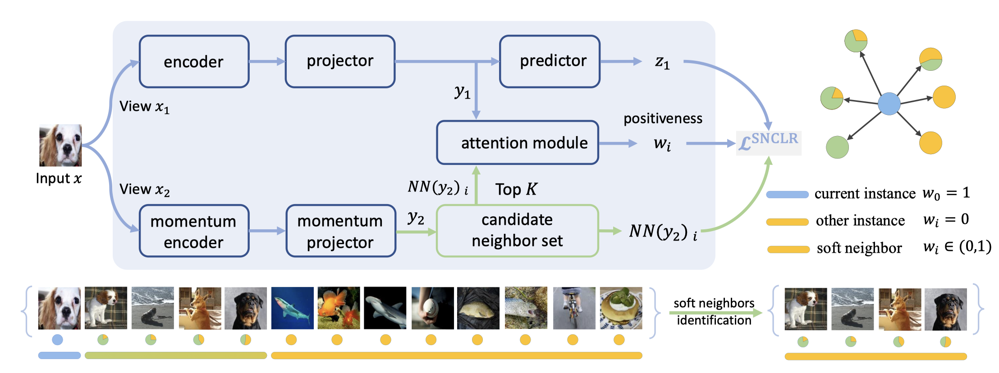

Soft Neighbors are Positive Supporters in Contrastive Visual Representation Learning
Abstract
Contrastive learning methods train visual encoders by comparing views (e.g., often created via a group of data augmentations on the same instance) from one instance to others. Typically, the views created from one instance are set as positive, while views from other instances are negative. This binary instance discrimination is studied extensively to improve feature representations in self-supervised learning.
In this paper, we rethink the instance discrimination framework and find the binary instance labeling insufficient to measure correlations between different samples. For an intuitive example, given a random image instance, there may exist other images in a mini-batch whose content meanings are the same (i.e., belonging to the same category) or partially related (i.e., belonging to a similar category). How to treat the images that correlate similarly to the current image instance leaves an unexplored problem. We thus propose to support the current image by exploring other correlated instances (i.e., soft neighbors).
We first carefully cultivate a candidate neighbor set, which will be further utilized to explore the highly-correlated instances. A cross-attention module is then introduced to predict the correlation score (denoted as positiveness) of other correlated instances with respect to the current one. The positiveness score quantitatively measures the positive support from each correlated instance, and is encoded into the objective for pretext training. To this end, our proposed method benefits in discriminating uncorrelated instances while absorbing correlated instances for SSL. We evaluate our soft neighbor contrastive learning method (SNCLR) on standard visual recognition benchmarks, including image classification, object detection, and instance segmentation. The state-of-the-art recognition performance shows that SNCLR is effective in improving feature representations from both ViT and CNN encoders.
Method

Citation
@inproceedings{ge2023soft,
title = {Soft Neighbors are Positive Supporters in Contrastive Visual Representation Learning},
author = {Ge, Chongjian and Wang, Jiangliu and Tong, Zhan and Chen, Shoufa and Song, Yibing and Luo, Ping},
booktitle = {International Conference on Learning Representations (ICLR)},
year = {2023}
}